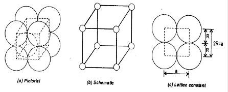
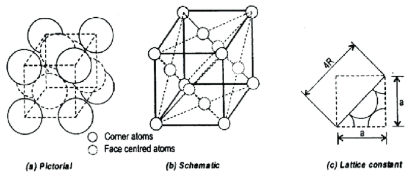
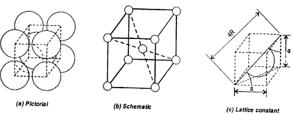
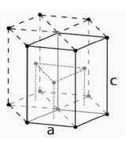

SOLIDS : Solids are characterised by definite shape, volume, rigidity, high density, low compressibility, mechanical strength, slow diffusion etc.
Solids can be classified into two types.
Crystalline Solids : Here, constituent particles are arranged in definite geometrical pattern in three dimension.
Amorphous Solids : Here, constituent particles are in random arrangement. (amorphous - means without any form).
| Crystalline Solids | Amorphous Solids |
|---|---|
| constituent particles are regularly arranged | constituent particles are randomly arranged |
| True solids | Pseudo solids or super cooled liquids |
| Have sharp melting point | Melts over a range of temperature |
| They are anisotropic i.e. their physical properties are different along different directions | They are isotropic i.e. their their physical properties are same along all directions |
| Show clean cleavage palnes | No clean cleavage planes |
| Have long range order | Can have short range order |
| Examples: Diamond, NaCl, etc. | Examples: Glass, Rubber, Plastic |
| IONIC | COVALENT | MOLECULAR | METALLIC | |
|---|---|---|---|---|
| Constituents | Positive and negative ions | Atoms | Molecules | Positive ions(Karnels) |
| Bonding | Electrovalent | Covalent | Van der waal, dipole-dipole attraction | Electrostatic force between karnels and electrons |
| Melting point | High | Very high | Low | Moderate to high |
| Example | CsCl, ZnS | Diamond | Iec, dry ice | Fe, Zn. |
Crystal Lattice :
If the three dimensional arrangement of constituent particles in a crystal is represented diagrammatically, in which each particle is depicted as a point, the arrangement is called crystal lattice. Thus, a regular three dimensional arrangement of points in space is called a crystal lattice.
Seven Crystal Systems : There are about 230 crystal forms, which have been grouped into 14 types of space lattices called Bravais Lattices on the basis of their symmetry and 7 different crystal systems on the basis of interfacial angles and axes.
| Crystal System | Parameters of Unit Cell | Bravais Lattices | ||
|---|---|---|---|---|
| Intercepts along crystallographicaxes | Axial angles | |||
| 1 | Cubic | a = b = c | 𝛼 =𝛽= 𝛾 = 90° | 3 : Primitive, Face Centred,Body centred |
| 2 | Tetragonal | a = b ≠ c | 𝛼 =𝛽= 𝛾 = 90° | 2 : Primitive, Body centred |
| 3 | Rhombohedral | a = b = c | 𝛼 =𝛽= 90°, 𝛾 ≠90° | 1: Primitive |
| 4 | Ortho Rhombic | a ≠ b ≠ c | 𝛼 =𝛽= 𝛾 = 90° | 4: Primitive, Face centred, Body centred, End centred |
| 5 | Monoclinic | a ≠ b ≠ c | 𝛼 =𝛽= 90°, 𝛾 ≠90° | 2: Primitive, End Centred |
| 6 | Triclinic | a ≠ b ≠ c | 𝛼 ≠ 𝛽 ≠ 𝛾 ≠90° | 1: Primitive |
| 7 | Hexagonal | a = b ≠ c | 𝛼 =𝛽= 90°,𝛾 =120° | 1: Primitive |
Number of Constituents per Unit Cell(Rank of Unit Cell)
| Unit Cell | No. of particles and their contributions | Total | ||
|---|---|---|---|---|
| Corner | Face | Center | ||
| Simple Cubic | 1×1/8 =1 | 1 | ||
| Face Centered | 1×1/8 =1 | 6×1/2 =3 | 4 | |
| Body Centered | 1×1/8 =1 | 1×1=1 | 2 | |
| End Centered | 1×1/8 =1 | 2×1/2=1 | 2 | |
Packing Fraction(PF):
It is defined as the fraction of the volume of the unit cell that is occupied by the constituent prticles.
(i) Primitive cubic unit cell :

Here, number of atoms per unit cell = 1
In the unit cell, particles touch each other along edges. Hence, R =a/2 (where r = radius of atom and a =edge length)
Therefor,
| 4/3𝜋R3 | |||||
| Packing Fraction | = | ---------- | = | 0.52 | |
| (2R)3 |
(ii) Face Centered cubic unit cell :

Here, number of atoms per unit cell =4
Atoms touch each other along the face diagonal. Hence R =√2a/4
| 4×4/3𝜋R3 | |||||
| Packing Fraction | = | -------------- | = | 0.74 | |
| (4R/√2)3 |
(iii)Body Centered cubic unit cell :

Here, number of atoms per unit cell =2
Atoms touch each other along the body diagonal. Hence R =√3a/4
| 2×4/3𝜋R3 | |||||
| Packing Fraction | = | -------------- | = | 0.68 | |
| (4R/√3)3 |
(iv)(iv) Hexagonal primitive unit cell :

Here,each corner atom is being shared by 6 other unit cells therefore their contribution to one unit cell would
be 1/6.
The number of atoms per unit cell =12×(1/6) + (3×1) + (2×1/2) = 6
Height of unit cell C =4R×√(2/3)
Length of unit cell a = 2R
Area of base = area of six equilateral triangles = 6×√(3/4)×(2R)3
| 6×4/3𝜋R3 | |||||
| Packing Fraction | = | ------------------------------------------ | = | 0.74 | |
| {6×√(3/4)×(2R)3}×{4R×√(2/3)} |